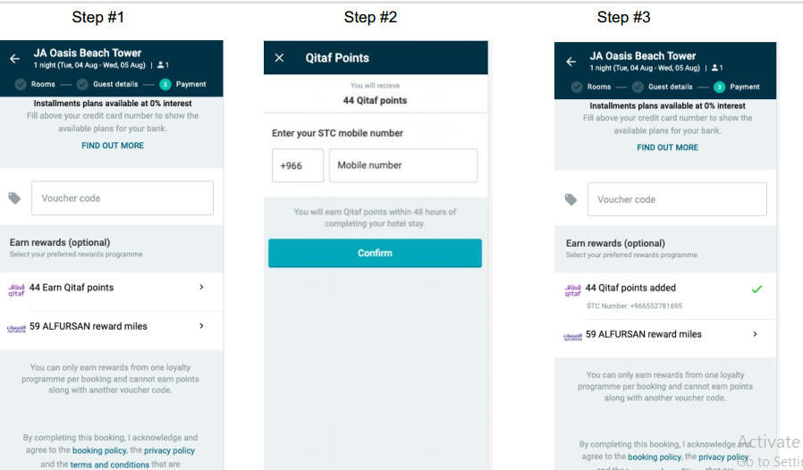
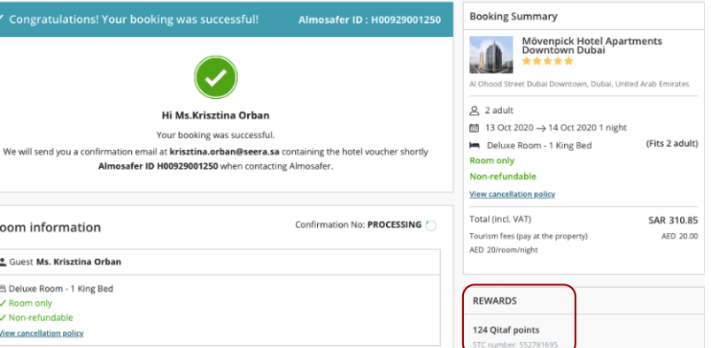
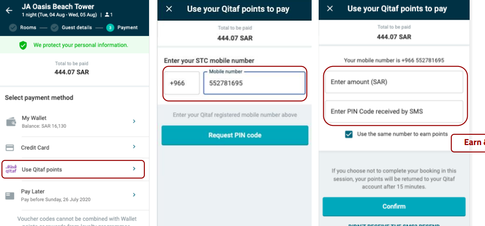
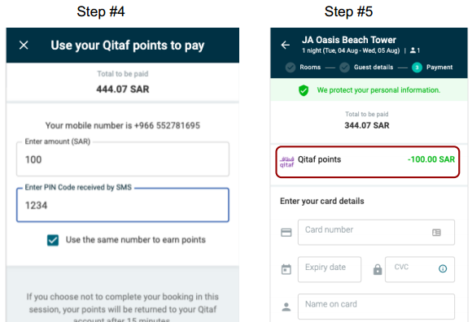

Qitaf
Qitaf is a multi-brand loyalty program run by Saudi Telecom (STC) for its users.
A Qitaf customer’s account is based on points which translate into monetary value
Implies: Qitaf customer can earn and redeem points at STC or at any of the partner merchants.
Qitaf is only be available on Almosafer KSA point of sale
Qitaf as a payment method
Qitaf (redemption)
full or partially via Qitaf points for flights and hotel bookings.
To pay in full using Qitaf points, customer has to spend a minimum of SAR 1 paid by card
The customer can simultaneously use Qitaf points to pay for a booking and then earn points for the same booking
Qitaf not applicable
Qitaf points cannot be used in conjunction with another loyalty program or voucher code.
How do i earn Qitaf points?

How do i earn Qitaf points?
How do i earn Qitaf points?
How do i earn Qitaf points? 
How do i pay with Qitaf points?
 How do i pay with Qitaf points?
How do i pay with Qitaf points?
 How do i pay with Qitaf points?